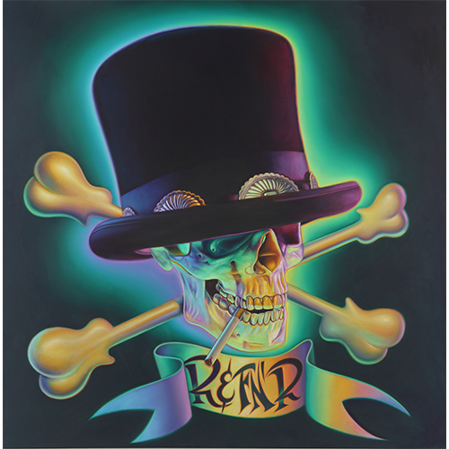
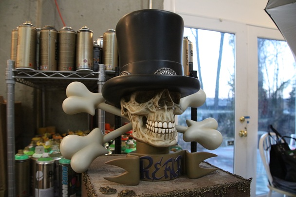
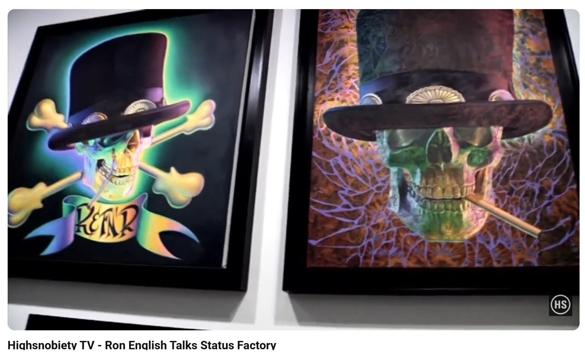
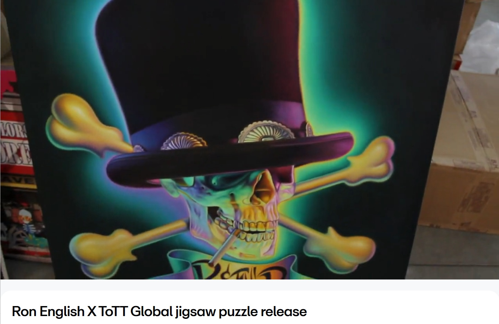

Exhibitions
Status Factory – The Art of Ron English, Frank M. Doyle Arts Pavilion (Orange Coast College), Costa Mesa, California, US, November 12–December 17, 2010.
Literature
Ron English, Original Grin: The Art of Ron English (Paris: Cernunnos, 2019), p. 324. ISBN 978-2374950938.
Notes
This work is documented on a Status Factory showcard.
A reference sculpture created by Ron English is retained as supporting documentation for this work.
This work appears at 1:37 in Highsnobiety TV’s YouTube video Ron English Talks Status Factory.
The work also appears in Arrested Motion’s opening and exhibition photographs for Status Factory – The Art of Ron English at the Frank M. Doyle Arts Pavilion, and at 0:11 in TOTT Global’s Vimeo video Ron English X ToTT Global jigsaw puzzle release.
Ancillary Documentation
The following materials document the work through showcard documentation, model/reference material, exhibition photography, and video stills.




